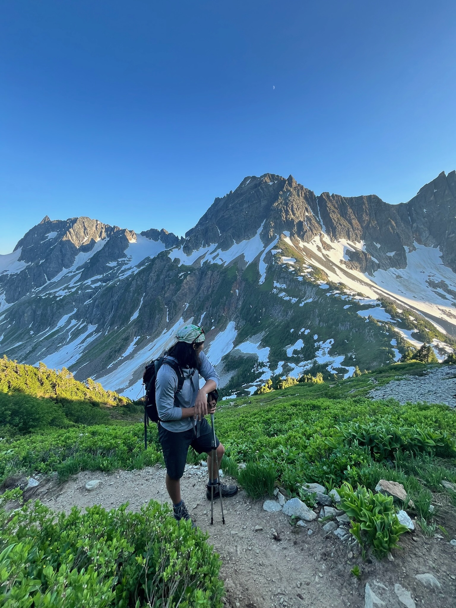
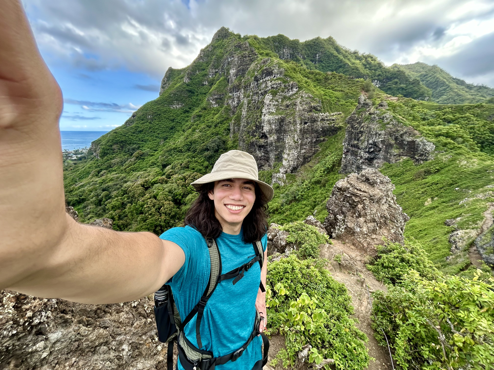

About Tay Aras
Tay Aras is a designer and product lead with 8+ years of experience, focused on emergent and creative technologies, hybrid environments, and interaction design. His work explores how technology shapes our interactions with each other, and our connections to both the tangible and digital worlds. He studied Hybrid Environments Design at Carnegie Mellon University.
Currently @Microsoft, building virtual communication platforms and experimental multimodal experiences. Also @Nowhere Interesting, a creative Design Studio & Lab exploring how what we make shapes how we live.
Outside of work, he plays in bands and organizes DIY shows across Seattle, Chicago, and Pittsburgh. He also enjoys live music, climbing rocks, playing guitar and bass, eating pasta (and gnocchi), finding cool jackets, and discovering new artists.



Experience
Education
Skills